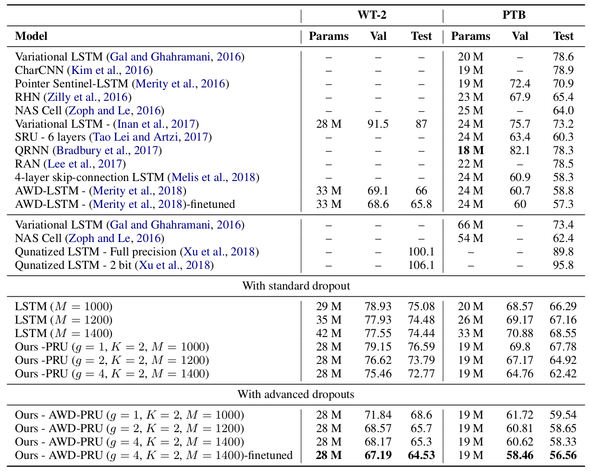

Sachin Mehta1, Rik Koncel-Kedziorski1, Mohammad Rastegari2, and Hannaneh Hajishirzi1
1
University of Washington, Seattle, WA, USA
2
Allen Institute for AI and XNOR.AI
 |
Figure: Block diagram visualizing the transformations in pyramidal recurrent unit (left) and the LSTM (bottom right) along with the LSTM gating architecture (top right). |
Abstract
LSTMs are powerful tools for modeling contextual information, as evidenced by their success at the task of language modeling. However, modeling contexts in very high dimensional space can lead to poor generalizability. We introduce the Pyramidal Recurrent Unit (PRU), which enables learning representations in high dimensional space with more generalization power and fewer parameters. PRUs replace the linear transformation in LSTMs with more sophisticated interactions including pyramidal and grouped linear transformations. This architecture gives strong results on word-level language modeling while reducing the number of parameters significantly. In particular, PRU improves the perplexity of a recent state-of-the-art language model (Merity et al., 2018) by up to 1.3 points while learning 15-20% fewer parameters. For similar number of model parameters, PRU outperforms all previous RNN models that exploit different gating mechanisms and transformations. We provide a detailed examination of the PRU and its behavior on the language modeling tasks.
Downloads
|
|
Pyramidal Recurrent Unit for Language Modeling
Sachin Mehta, Rik Koncel-Kedziorski, Mohammad Rastegari, and Hannaneh Hajishirzi 2018 Conference on Empirical Methods in Natural Language Processing (EMNLP) |
Results on the PenTree Bank (PTB) and the WikiText-2 (WT-2) dataset
Below table compares the performance of the PRU with different architectures for Langauge Modeling. PRU delivers the best results, even with standard dropout.
|  | ||
Table: Comparison of single model word-level perplexity of PRU with state-of-the-art methods on PTB and WT-2 datasets. |
||
This page is adapted from ESPNet.